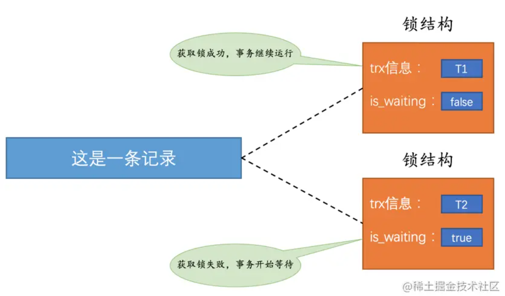
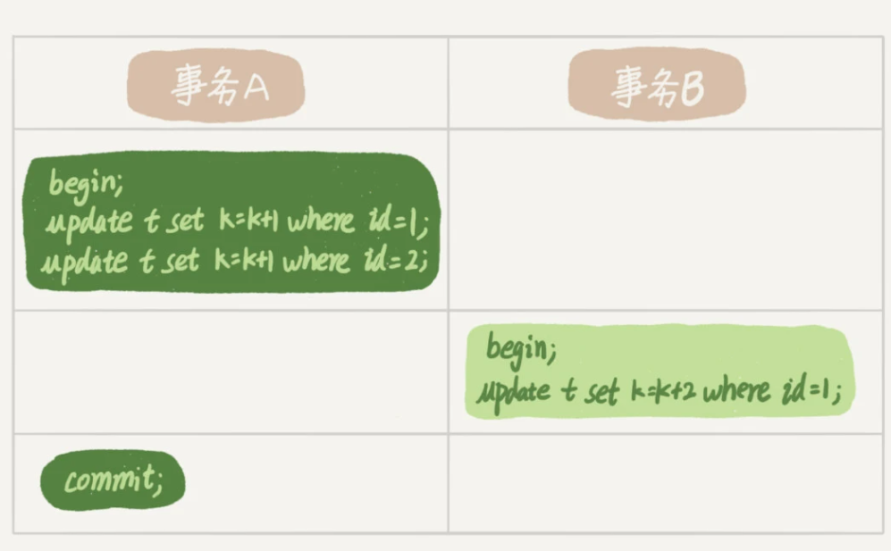
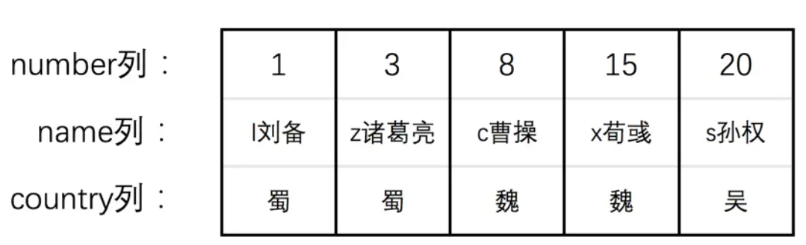
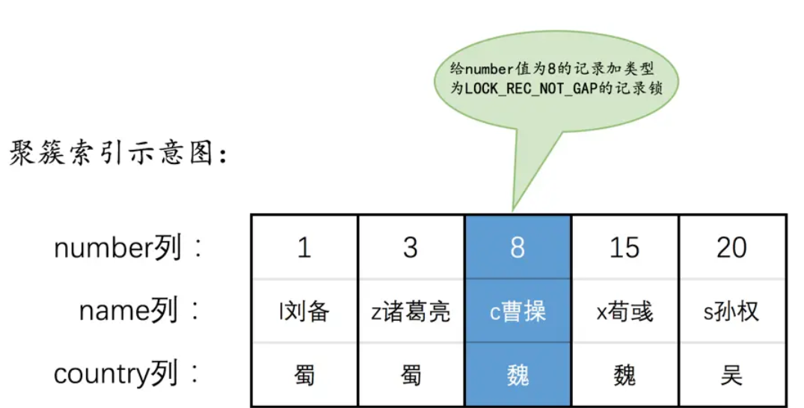
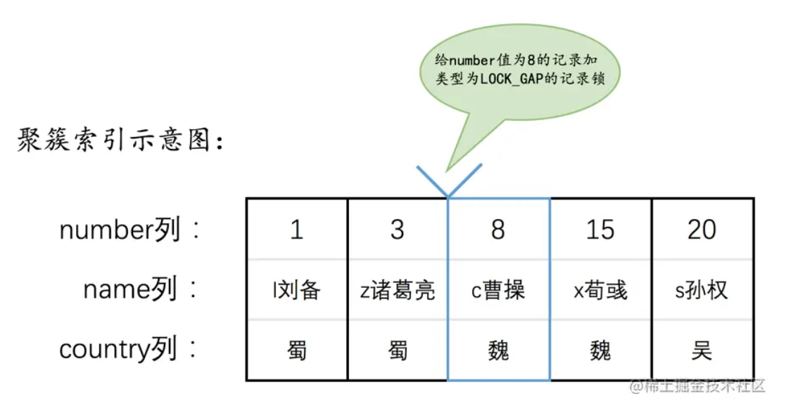
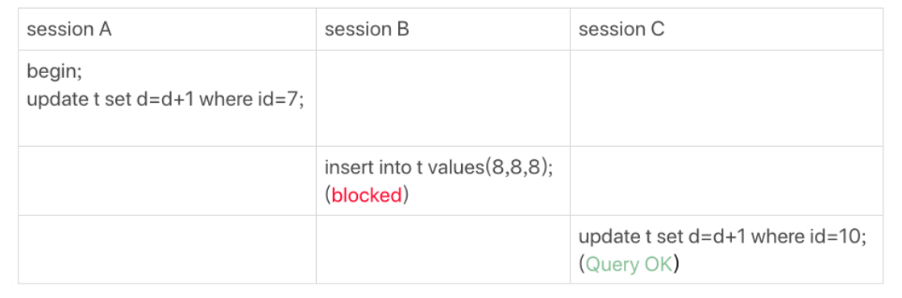
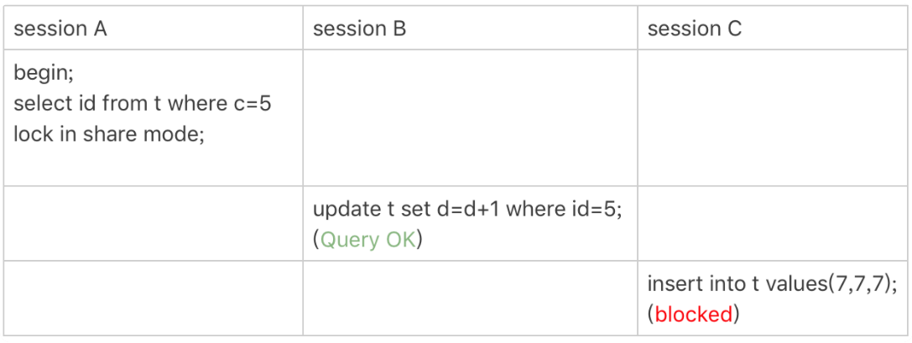

MySQL中的锁
1. 介绍
上篇博客 MySQL的事务隔离级别和MVCC 介绍了 MySQL 如何使用 MVCC 解决读写冲突，实现事务并发读取数据。那么对于并发修改，MySQL 又采用了什么机制呢？
MySQL 使用锁来解决并发修改问题，锁结构包含很多信息，其中最主要的有：
- 事务信息：记录这个锁由哪个事务生成
- is_waiting：事务是否在等待，值为 false 则该事务获得了锁
如下图所示，事务 T1 获取到锁，继续执行，而 T2 未得到锁，则进行等待。

当事务 T1 提交之后，会将生成的锁释放，同时检查是否有其他在等待，此时发现事务 T2，将 T2 的锁结构中 is_waiting 属性设置为 false，T2 获得锁继续执行。
上一篇博客提到，利用 MVCC 读取数据称为一致性锁，相对应的，采用锁读取和更新称为锁定读或者当前读，可以通过以下方式开启：
1 | INSERT, UPDATE, DELETE # 修改操作 |
2. 锁分类
2.1 共享和排他锁
MySQL 中的锁按照性质可以分为：
- 共享锁：Shared Locks，简称 S 锁，S 锁与 S 锁兼容，即一个事务获得 S 锁后不释放，其他事务也可获得 S 锁；
- 独占锁：Exclusive Locks，简称 X 锁，X 锁与 X 锁、S 锁都不兼容。也就是说，一个事务获得 X 锁之后，其他事务无法获得 S 锁获得 X锁；一个事务获得 S 锁后，其他事务也无法获得 X 锁。
2.2 多粒度锁
MySQL 为了提高并发程度，提出了多粒度锁，分为全局锁、表锁和行锁。
2.2.1 全局读锁
全局锁即对整个数据库加锁，MySQL 提供了一个加全局读锁的命令，即
1 | Flush tables with read lock |
整个库将处于只读状态，典型使用场景是做全库备份。
2.2.2 表级锁
MySQL 表级锁以下类型：
表锁：对整个表添加 S 锁或者 X 锁，开启方式是
1
2lock tables ... read # 添加表级S锁
lock tables ... write # 添加表级X锁元数据锁：metadata lock，MDL，用于保证读写的正确性，会默认添加。增删改查时会加 MDL 读锁，修改表结构（添加/删除列、添加索引等）时会加 MDL 写锁，保证在表结构修改时进行数据读写的正确性；
AUTO-INC 锁：在某列添加 AUTO_INCREMENT 属性之后，执行插入语句时会在表级别添加该锁
对于 MyISAM、MEMORY 等存储引擎而言，只支持表级锁。
3. 行锁
本文最重点的部分是行锁。行锁也称记录锁，顾名思义加在某行记录上的锁，InnoDB 由于支持行锁和事务，成为最常被使用的存储引擎。
3.1 两阶段协议
MySQL 是怎么管理锁的呢？这就需要提到两阶段协议，例如下图的操作，事务 B 的 update 操作会阻塞，直到事务 A 提交之后才继续执行。

两阶段锁协议指的是，InnoDB 事务中行锁是在需要的时候才加上，但不是立马释放，并且等到事务结束释放所有的锁。根据这个协议，当我们的事务需要锁多个行时，要尽量把会导致锁冲突的操作往后放。
3.2 行锁类型
在解释各种行锁之前，先定义数据库含有以下数据。

常见的行锁类型有：
Record Locks：分为 S 锁和 X 锁，仅锁住一条记录，示意图如下：

Gap Locks：间隙锁，在 Repeatalbe Read 级别下生效，锁定该行记录与之前记录的间隙，用来解决幻读问题。

给 number 为 8 的行加了间隙锁后，则其它事务无法在 (3，8) 这个区间插入新记录。
Next-Key Locks：Record Locks + Gap Locks，既锁出该行，也锁住间隙，是前开后闭区间；
Insert Intetion Locks：插入意向锁，当一个事务想插入数据的位置被加了 Gap Locks 时，需要在内存中生成一个锁结构，表明想在某个间隙插入新记录，但是现在在等待。
间隙锁的引入，虽然解决了幻读问题，但同时也降低了并发度。为了提高并发度可以选择将隔离级别改为 Read Commited，同时将 binlog 格式设置为 row 解决数据和日志不一致的问题。
3.3 加锁规则
上文介绍了各种行锁，那么 MySQL 是根据什么规则加锁的呢？
其加锁规则如下：
- 原则 1：加锁的基本规则是 Next-Key Lock；
- 原则 2：查找过程中访问到的数据才会加锁；
- 优化 1：索引上的等值查询，给唯一索引加锁时，改为行锁 Record Lock；
- 优化 2：索引上的等值查询，向右遍历且最后一个不满足等值条件时，改为 Gap Lock；
- 一个例外：唯一索引的范围查询会访问到第一个不满足条件的值；
假设有以下数据：
| id(primar key) | c (key) | d |
|---|---|---|
| 0 | 0 | 0 |
| 5 | 5 | 5 |
| 10 | 10 | 10 |
| 15 | 15 | 15 |
| 20 | 20 | 20 |
| 25 | 25 | 25 |
案例1：等值查询间隙锁

根据加锁规则判断：
- 根据原则 1，会给 (5，10] 加上 Next-Key Lock；
- 根据优化 2：表中不存在 id = 7 的数据，向右遍历到最后一个不满足等值条件的数据 id = 10，改为 Gap Lock，所以会给 (5，10）添加 Gap Lock。
根据上述分析，由于间隙锁事务 B 会阻塞直到 A 释放，而事务 C 不影响执行。
案例2： 非唯一索引等值锁

- 根据原则 1， 给 (0，5] 添加 Next-Key Lock；
- 由于 c 是普通索引，故根据优化 2，需要向右遍历直到 c = 10，因此需要给 (5，10) 加 Gap Lock；
- 根据原则 2，访问到的数据才会加锁，这个查询不访问主键索引，故主键索引没有锁。
根据上述分析，事务 A 的锁不影响事务 B 执行，事务 C 需要插入 (7，7，7)，将会被事务 A 的间隙锁 (5，10) 锁住。
其余分析可见 为什么我只改一行语句，锁这么多。